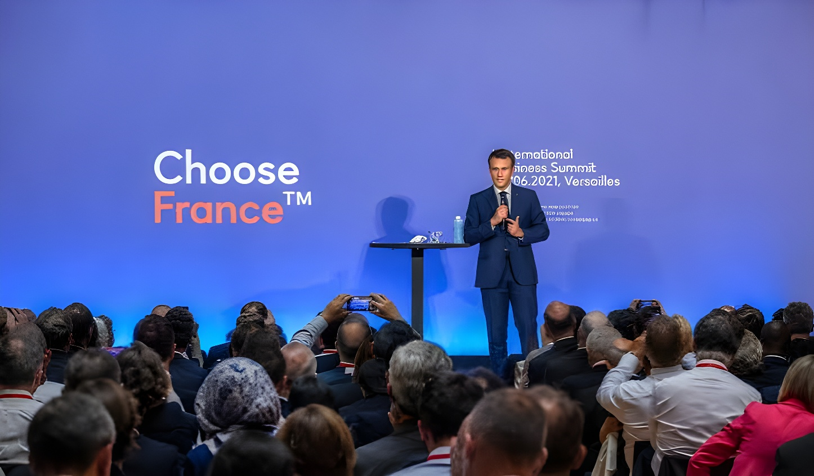

Le 1er juin 2026, le château de Versailles a accueilli la neuvième édition du sommet Choose France. Avec 93 milliards d'euros d'investissements annoncés — un montant qui dépasse à lui seul le cumul des huit éditions précédentes — et plus de 15 600 emplois à la clé, Emmanuel Macron a signé le dernier grand rendez-vous économique de son second mandat sur un record historique. Tirée par l'intelligence artificielle et les infrastructures numériques, cette édition marque un tournant dans la géographie des investissements internationaux en France.
Lancé en janvier 2018 par Emmanuel Macron, le sommet Choose France s'est imposé comme le rendez-vous annuel de référence entre la France et les investisseurs internationaux. Le principe : réunir au château de Versailles plus de 200 dirigeants de grandes entreprises étrangères, venus de près de 50 pays, pour leur présenter les atouts du territoire et concrétiser des engagements d'implantation ou d'extension d'activité.
La neuvième édition, tenue le 1er juin 2026, était la dernière de la présidence Macron. Elle s'est ouverte quelques jours après la publication du baromètre 2026 du cabinet EY, qui confirmait pour la septième année consécutive la place de la France comme première destination européenne des investissements internationaux — avec 852 projets recensés l'an dernier, sur 5 026 projets identifiés dans 47 pays d'Europe.
L'annonce dominante de cette édition est venue du groupe japonais SoftBank. Son fondateur et président, Masayoshi Son, a confirmé à Versailles un plan d'investissement pouvant atteindre 75 milliards d'euros en France, dont 45 milliards fermes d'ici à 2031. Ce premier engagement du groupe en Europe est entièrement dédié au développement de centres de données pour l'intelligence artificielle, avec une capacité totale visée de 5 GW. La première phase, contractuellement engagée, prévoit 3,1 GW répartis sur trois sites dans les Hauts-de-France : Dunkerque, Valenciennes et Le Bosquel, près d'Amiens.
À lui seul, l'engagement de SoftBank représente près de 48 % des 93 milliards d'euros annoncés lors de l'édition. Il propulse les Hauts-de-France au rang de grande région bénéficiaire de Choose France 2026 : plus de 83 milliards d'euros d'investissements identifiés sur le seul territoire régional, concentrés principalement dans les infrastructures numériques.
SoftBank n'est pas seul dans cette ruée vers l'infrastructure de calcul. Le fonds canadien Brookfield a annoncé porter à 30 milliards d'euros ses investissements dans les Hauts-de-France, incluant deux nouveaux centres de données à Cambrai et à Escaudain. Le néerlandais Nebius engage 8 milliards d'euros pour transformer l'ancienne friche industrielle Bridgestone de Béthune en un campus européen de calcul et de cloud IA de 240 MW, avec une mise en service partielle dès 2026. Le fonds émirati MGX, associé à Bpifrance, Mistral et NVIDIA, annonce l'ouverture d'un second site de son Campus AI pour environ 7,5 milliards d'euros, dédié à des infrastructures d'IA décarbonées de grande capacité.
Si l'IA domine les chiffres, Choose France 2026 révèle aussi une dynamique industrielle dans des secteurs plus traditionnels. Salesforce, l'américain du CRM, s'engage à investir 2 milliards de dollars d'ici 2030 pour ouvrir un pôle IA à Paris, intégrant des programmes de formation aux outils d'intelligence artificielle. Le partenariat Foxconn-Bull (Taïwan / France) vise à développer à Angers une chaîne de valeur européenne en serveurs et centres de données IA pour 120 millions d'euros. DSBJ, acteur chinois, prévoit de transformer plusieurs sites industriels français en unités de production d'équipements pour centres de données.
L'industrie pharmaceutique est également bien représentée. Le géant suisse Sandoz annonce 150 millions d'euros supplémentaires d'ici à 2034 pour son site toulousain de médicaments biosimilaires, portant l'ensemble de ses engagements en France à 550 millions d'euros depuis décembre 2025. GSK ajoute 140 millions d'euros à ses investissements déjà planifiés pour la période 2026-2028. Curium Pharma investira 32 millions d'euros pour créer une ligne de production de traitements contre le cancer. Le groupe allemand Zwilling confirme 42 millions d'euros supplémentaires sur son site Staub de Merville, dans les Hauts-de-France.
« Cette édition est importante parce qu'elle acte 93 milliards d'euros d'investissements dans notre pays, ce qui est massif. Des dizaines de milliers d'emplois à la clé. C'est évidemment beaucoup d'IA, de datacenter avec deux acteurs massifs que sont SoftBank et Mubadala-MGX. Ceci vient consolider les neuf dernières années d'efforts. »
— Emmanuel Macron, lors du sommet Choose France, 1er juin 2026Lancement du sommet Choose France par Emmanuel Macron. Première édition à Versailles.
8e édition : 53 annonces pour 40,8 milliards d'euros et plus de 13 000 emplois — précédent record.
Publication du baromètre EY : la France reste première destination européenne des investissements pour la 7e année consécutive.
Premières « Journées Choose France » : ouverture de sites industriels au public dans toute la France.
9e sommet Choose France au château de Versailles : 71 projets, 93 milliards d'euros, 15 600 emplois annoncés.
Le chiffre de 93 milliards d'euros a été salué comme un record historique, mais il appelle à la nuance. Sur ce total, les 45 milliards fermes de SoftBank constituent l'unique engagement pleinement contractualisé à ce stade : le reste agrège des plafonds conditionnels et des plans pluriannuels aux statuts hétérogènes. Par ailleurs, si la France attire les capitaux internationaux dans le numérique et le calcul IA, grâce à son énergie décarbonée, sa position géographique et ses réseaux, l'industrie manufacturière classique — automobile, chimie, métallurgie — affiche de son côté un recul de 17 % des projets entrants selon EY. Le défi des années à venir sera de traduire ces annonces en emplois stables et en montée en puissance technologique durable sur l'ensemble du territoire — bien au-delà des seuls Hauts-de-France.